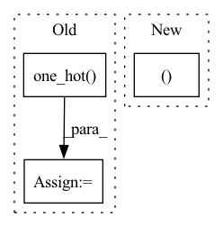

Pattern ID :11685

Before Change
langevin_steps=RUN.langevin_steps,
device=device)
if is_stylegan:
one_hot_fake_labels = F.one_hot(fake_labels, num_classes=num_classes)
generator = misc.peel_model(generator)
ws = generator.mapping(zs, one_hot_fake_labels)
if style_mixing_p > 0:
cutoff = torch.empty([], dtype=torch.int64, device=ws.device).random_(1, ws.shape[1])
cutoff = torch.where(torch.rand([], device=ws.device) < style_mixing_p, cutoff, torch.full_like(cutoff, ws.shape[1]))
ws[:, cutoff:] = generator.mapping(torch.randn_like(zs), one_hot_fake_labels, skip_w_avg_update=True)[:, cutoff:]
fake_images = generator.synthesis(ws)
else:
After Change
langevin_steps=RUN.langevin_steps,
device=device)
if is_stylegan:
ws, fake_images = stylegan_generate_images(zs=zs,
fake_labels=fake_labels,
num_classes=num_classes,
style_mixing_p=style_mixing_p,
In pattern: SUPERPATTERN
Frequency: 3
Non-data size: 3
Instances
Fragment ID: 39518138
Project Name: postech-cvlab/pytorch-studiogan
Commit Name: 434cbf2212862f726f1e7cc9527bc42d08b947ee
Time: 2021-10-04
Author: first287@naver.com
File Name: src/utils/sample.py
M Class Name: AnonimousClass
N Class Name: AnonimousClass
M Method Name: generate_images(18)
N Method Name: generate_images(16)
M Parent Class:
N Parent Class:
M File Name: src/utils/sample.py
N File Name: src/utils/sample.py
M Start Line: 131
M End Line: 144
N Start Line: 87
N End Line: 152
'>
Before Change
if self.inputs_are_logits:
if self.apply_transform:
inputs = F.softmax(inputs, dim=1)
targets = F.one_hot(targets.contiguous().view(-1), inputs.shape[1]).float()
else:
inputs = inputs.unsqueeze(1)
targets = targets.unsqueeze(1)
After Change
Returns:
Tanimoto distance loss (float)
inputs, targets = self.preprocess(inputs, targets)
weights = torch.reciprocal(torch.square(self.volume))
new_weights = torch.where(torch.isinf(weights), torch.zeros_like(weights), weights)
'>
Fragment ID: 39518136
Project Name: jgrss/cultionet
Commit Name: f2182f120125c8e95ee3f5980c87042d8a2718a7
Time: 2022-11-09
Author: jgrss@users.noreply.github.com
File Name: src/cultionet/losses/losses.py
M Class Name: TanimotoDistanceLoss
N Class Name: TanimotoDistanceLoss
M Method Name: forward(3)
N Method Name: forward(3)
M Parent Class: ClassifierPreprocessing
N Parent Class: object
M File Name: src/cultionet/losses/losses.py
N File Name: src/cultionet/losses/losses.py
M Start Line: 135
M End Line: 143
N Start Line: 77
N End Line: 77
'>
Before Change
bin_size = self.max_pixel_val / self.output_channel_bits
channel_bins = torch.arange(bin_size, self.max_pixel_val, bin_size).to(avg_target.device)
discretized_target = torch.bucketize(avg_target, channel_bins)
discretized_target = F.one_hot(discretized_target,
self.output_channel_bits)
c, bi = self.channels, self.output_channel_bits
discretized_target = rearrange(discretized_target,
"b n c bi -> b n (c bi)",
c=c,
bi=bi)
After Change
self.std = torch.tensor(std).view(-1, 1, 1) if std else None
def forward(self, predicted_patches, target, mask):
p, c, mpv, bits, device = self.patch_size, self.channels, self.max_pixel_val, self.output_channel_bits, target.device
bin_size = mpv / (2 ** bits)
// un-normalize input
if exists(self.mean) and exists(self.std):
'>
Fragment ID: 39518143
Project Name: lucidrains/vit-pytorch
Commit Name: 64a2ef6462bde61db4dd8f0887ee71192b273692
Time: 2021-06-16
Author: lucidrains@gmail.com
File Name: vit_pytorch/mpp.py
M Class Name: MPPLoss
N Class Name: MPPLoss
M Method Name: forward(4)
N Method Name: forward(4)
M Parent Class: nn.Module
N Parent Class: nn.Module
M File Name: vit_pytorch/mpp.py
N File Name: vit_pytorch/mpp.py
M Start Line: 53
M End Line: 82
N Start Line: 53
N End Line: 72